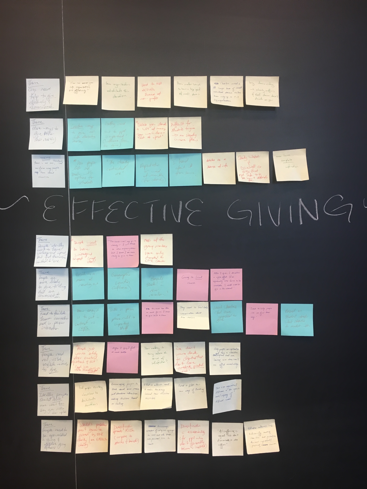

In the course of our design process, we worked worked with users to figure out what they needed that our app could provide. Here are a few of the key takeaways from those interactions.
Key findings from Contextual Inquiry
In our findings, we identified three different segments among individual donors: members of religious groups, effective altruists, and directors of charitable organizations. Despite their different backgrounds and experiences with altruism, all three groups face similar challenges in charitable giving. For one, all of them in some way suffer from a lack of information and knowledge. For religious members, their altruism is guided and heavily influenced by the church, limiting their knowledge around how they can have greater impact. For effective altruists, assessing the impact of charities and finding accurate information makes the charity selection process uncertain. For executive directors, their knowledge of effective charities is limited to whatever they can find via their own networks and local communities.
In addition, all three groups greatly benefit from community and human interaction in the giving process. Intimate relationships and experiences with the church community inspires members of religious groups to give. Effective altruists talk with other altruists in making decisions, as well as seek to increase conversation and engagement around effective altruism. Finally, executive directors make their connections with charity’s available for others people to benefit from.
Finally, we noticed a common recurring issue of the need for convenience in the charitable giving process i.e. finding charities, choosing ways to give, etc. To address the issue of “convenience” in giving effectively, there are two different approaches we can take. The first is that we can lower existing barriers to giving, such as decreasing the time and effort needed for people to give. The second option is to find ways to make the extra effort necessary to give effectively more immediately gratifying along every step of the way. We would like to explore this second option by finding the appropriate reward mechanisms and reinforcements to make conducting due diligence on charities enjoyable.

High-level Themes:
- Organizations need help to give effectively and assess impact
- There are ways to give other than money, which are not necessarily widely recognized
- There is no single standardized, uniform way that people learn about charities
- People ideally want to have widespread impact, but tend to find themselves committed to “one” charity or cause
- People are more likely to give to causes and organizations that are convenient or close to them
- People want a familiar human connection and in-person interaction
- People need to see evidence of impact and tangible results to give
- Ideally, people should think more about how they give when they give rather than acting on impulse
- People need to be more open-minded in giving and explore giving options